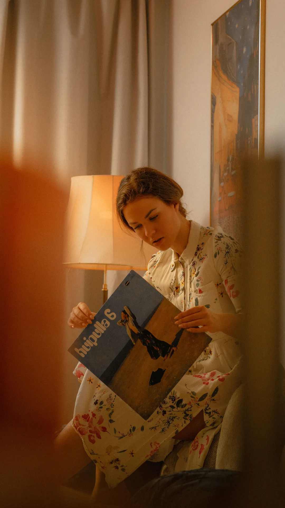
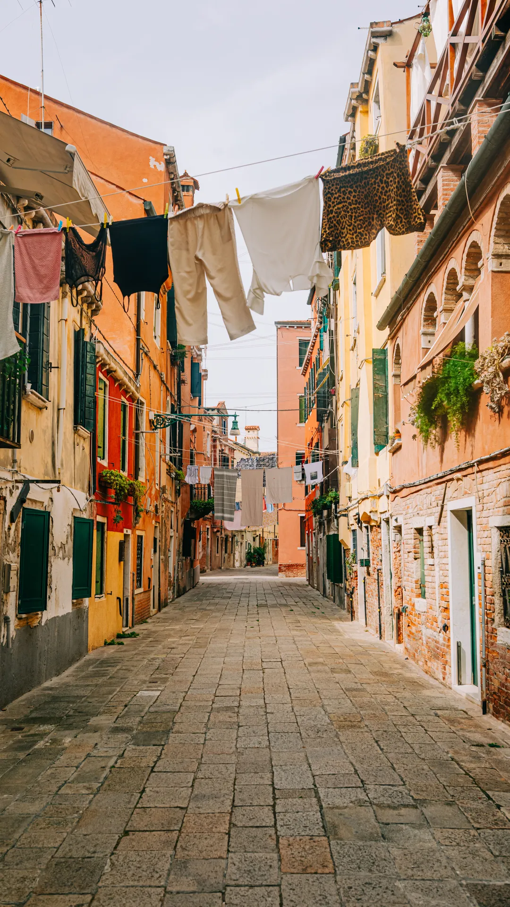
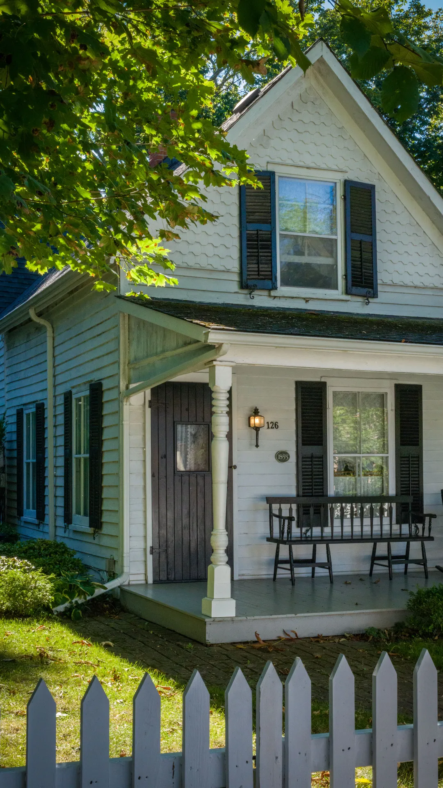
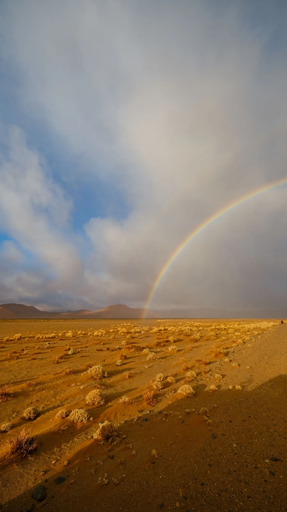

Tarde de vinilosFoto 01 / 05Una tarde tranquila en casa, con la luz cálida de la lámpara y un disco recién elegido.
- Pausa de caféFoto 02 / 05
Una taza verde sobre el sillón: el mejor momento para detener el reloj.

Callejón con ropa tendidaFoto 03 / 05Un rincón veneciano donde la ropa cuelga entre las fachadas y el adoquín guía el paseo.

La casa del porcheFoto 04 / 05Una casita blanca con porche y mecedora, escondida detrás de la cerca y los árboles.

Arcoíris en el desiertoFoto 05 / 05Después de la tormenta, un arcoíris se abre sobre el desierto dorado al atardecer.
Tu navegador no soporta animation-timeline: se muestra solo la primera foto.